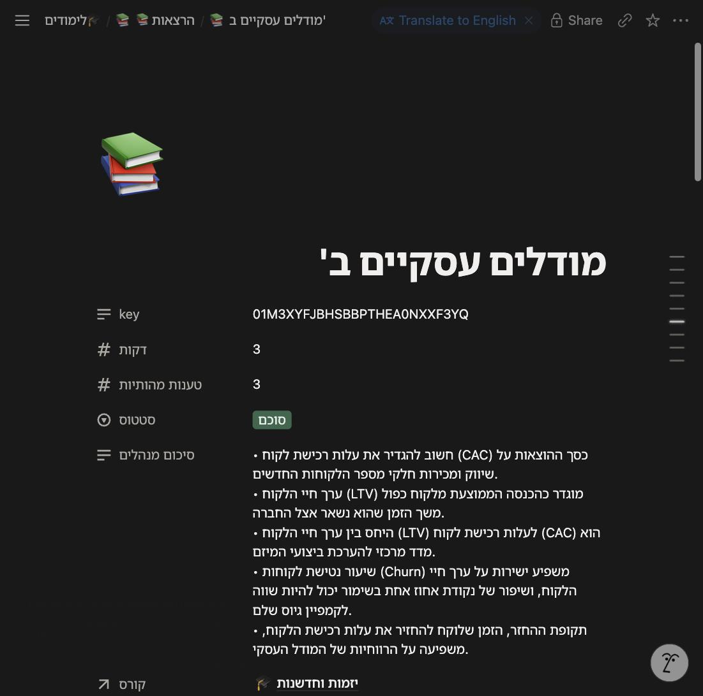
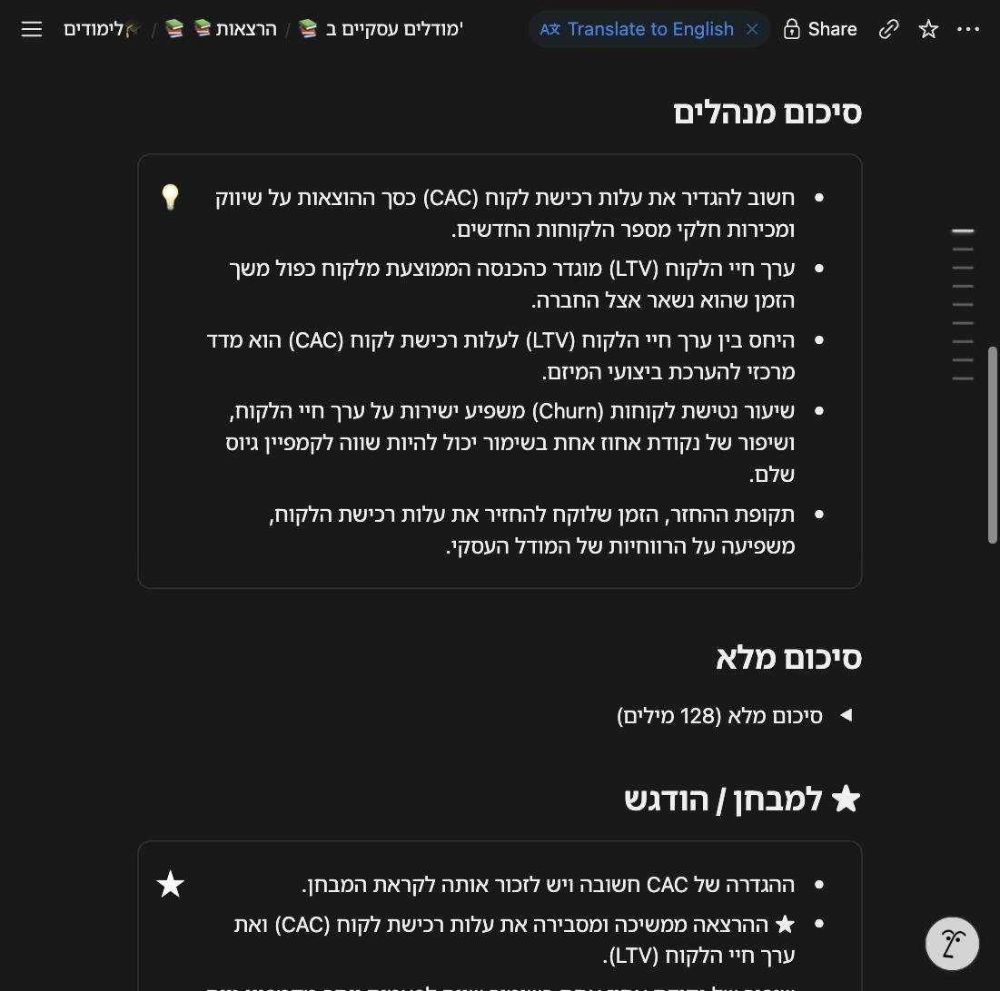
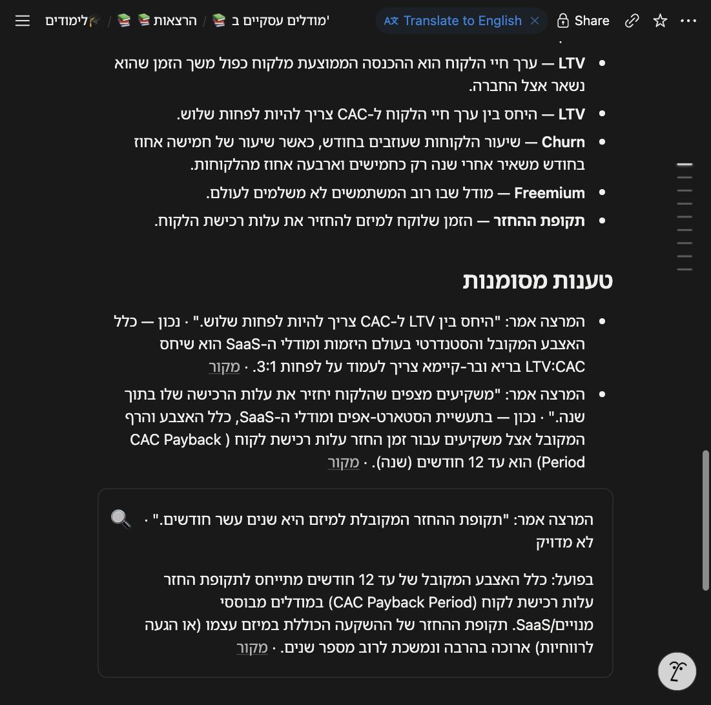
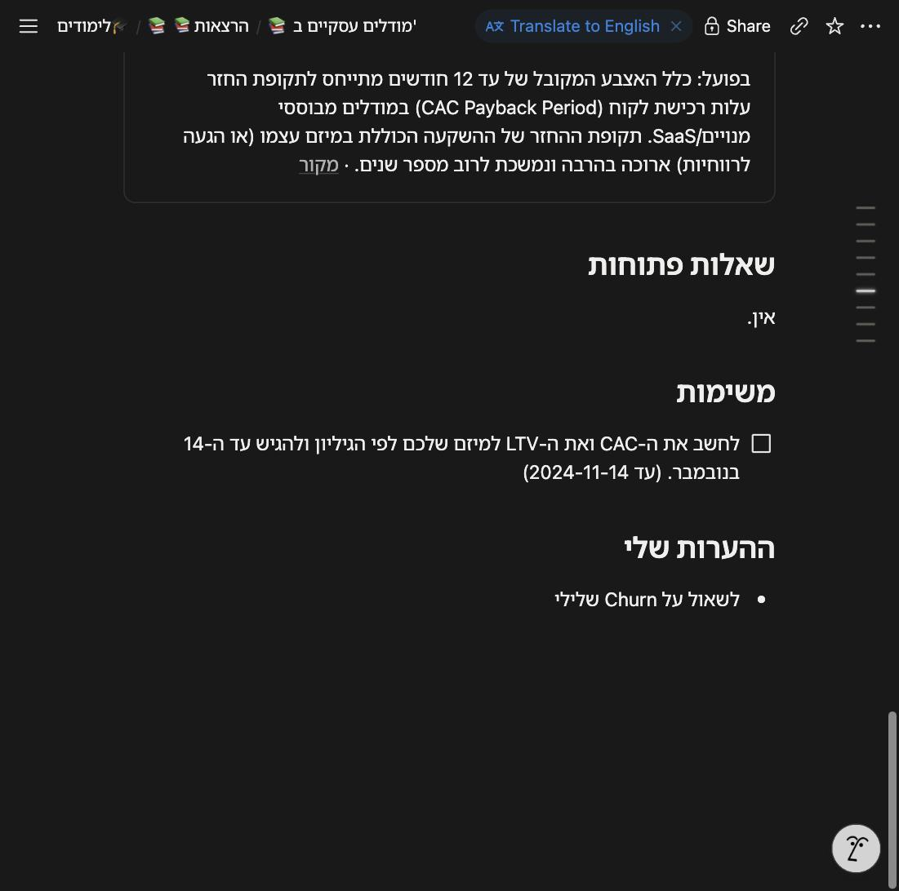
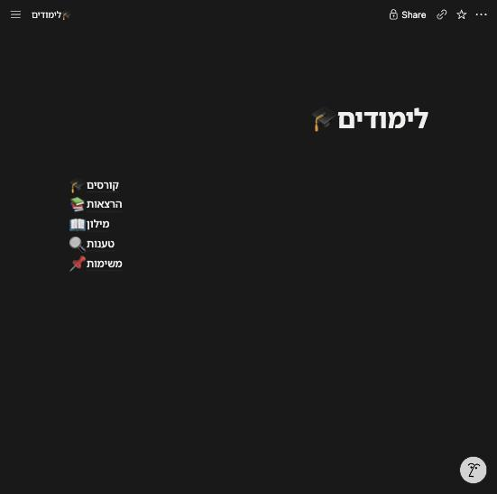

אותו Digest שנכתב לתיקיית הקורס נכתב עכשיו גם ל-Notion — בטלפון, ולשיתוף. חמישה מסדים תחת העמוד "🎓 לימודים" שיצרת, עמוד לכל הרצאה שגופו הוא ה-Digest, ושורה לכל מושג, טענה מסומנת ומשימה. לכל שורה מפתח נסתר, ולכן סנכרון חוזר מעדכן במקום ולא מכפיל. בלי טוקן, ה-Sink מדלג עם סיבה ביומן והתיקייה נכתבת כרגיל: Notion לעולם לא חוסם Digest.
ענף feat/m6-notionהמספרים מ-eval/m6.json ומטבלת decisionsנבנה לפני המועד (תוכנן ל-16.10)
8/8שער M6, על ה-Notion האמיתי שלך
584בדיקות (היו 523), ruff נקי
24.24 שנ'סנכרון ראשון של הרצאה (20 דק')
0 $עלות · Notion לא מחייב
מה נבנה
🎓 לימודים — העמוד שיצרת ושיתפת עם האינטגרציה
🎓 קורסים — שם, שפה, תיקייה
📚 הרצאות — כותרת, קורס↗, שבוע, תאריך, סטטוס, סיכום מנהלים, מספר טענות מהותיות, דקות; גוף העמוד = ה-Digest
📖 מילון — מושג, הסבר, קורס↗, נראה לראשונה↗, canonical_key, ★
סיוםה-Digest נוצר ונשמר במסד (מעכשיו גם החלקים שרק המודל יוצר — סכימה v7)
FolderSinkהתיקייה נכתבת כרגיל, קודם
NotionSinkשורת קורס, עמוד הרצאה ב-Markdown, שורות מילון / טענות / משימות — upsert לפי מפתח
בלי טוקן"skipped — NOTION_TOKEN missing" ביומן; שום דבר לא נעצר
cli notion-init — יוצר את חמשת המסדים פעם אחת ושומר את ה-id-ים ב-.env. הרצה חוזרת שומרת מסד שקיים ויוצרת מחדש רק מסד שנמחק.
עמוד ההרצאה נשלח ב-Markdown של Notion (גרסת API 2026-03-11): callout כחול לסיכום המנהלים, toggle לסיכום המלא, callout צהוב ל-★, callout אדום לטענה שגויה, תיבות סימון למשימות, H2 לכל אחד מתשעת הפרקים. סנכרון חוזר מחליף את גוף העמוד במקום.
cli notion-sync — דוחף הרצאות שכבר סוכמו מה-Digest השמור, בלי לקרוא למודל. כך גם הרצאות ישנות מגיעות ל-Notion אחרי שהטוקן נכנס.
הכל דרך store/net.py: כל קריאה נרשמת ב-decisions עם המארח, הבייטים והזמן; הטוקן לא מופיע ביומן. יוצא רק טקסט ה-Digest — אודיו ותמלול לא.
איך זה נראה
הרצאת הדגמה מומצאת (CAC, LTV, Churn) על מסד נפרד — אותו עמוד שהמוצר כותב ב"סיום". חומר הקורס האמיתי נשאר מחוץ לריפו.

ראש העמוד: השדות

סיכום מנהלים · סיכום מלא (toggle) · ★

מושגים · טענות — "לא מדויק" ב-callout אדום עם מקור

שאלות · משימה עם ☐ · הערות

העמוד "לימודים" וחמשת המסדים
המספרים
סנכרון ראשון של הרצאה אמיתית (התרגול, 20 דק', 47 שורות מושג שהן 23 מפתחות, 6 טענות, 2 משימות): 38 קריאות, 24.24 שנ'. עמוד הקורס: 1.97 שנ'.
סנכרון חוזר (4 פעמים, כולל השער): עד 39 קריאות ועד 24.9 שנ'; אף שורה לא הוכפלה — 23→23 מילון, 6→6 טענות, 2→2 משימות, אותו עמוד.
"סיום" מלא על הרצאת ההדגמה: Digest ב-20.82 שנ', ואז Notion ב-11.79 שנ' (17 קריאות) באותה ריצה.
סך הכל היום:194 קריאות ל-Notion על ההרצאה הזו, 0 נכשלו, 152.4 KB יצאו. עלות: 0.
השער: חמשת המסדים עונים · עמוד ההרצאה עם 9 פרקים · שורות המילון = המפתחות הייחודיים · סנכרון חוזר בלי כפילויות · דילוג עם סיבה כשאין טוקן · prompt cache · בדיקות · סריקת סודות. PASS 8/8.
מה נתפס בהרצה האמיתית
cli digest לא ראה את הטוקן — ה-Sinks נבחרו לפני טעינת .env (הדף ו-replay טענו, digest לא). תוקן עם בדיקה.
שורות שמתחילות באנגלית התהפכו ("GitLab — פלטפורמה" יצא משמאל לימין): Notion קובע כיוון לפי התו החזק הראשון. בקורס בעברית כל שורה פותחת עכשיו בסימן RTL. אומת בדפדפן.
הגוון של ה-callout צבע את הטקסט ולא את הרקע — עבר לצבעי רקע. האימוג'י הוכפל בכותרות המסדים (אייקון + כותרת) — הכותרת בלי.
בדיקת הסנכרון החוזר בשער קרסה ("Event loop is closed"): שלוש ריצות של asyncio על לקוח HTTP אחד. ה-Notion המזויף לא תפס את זה. לולאה אחת, עם בדיקה שסופרת.
פרטי השער הדפיסו עברית לטרמינל (שמות הפרקים) — מספרים בלבד עכשיו, עם בדיקה.
תקלה: הבדיקות כתבו ל-Notion האמיתי
מה קרה: אחרי שהטוקן נכנס ל-.env, בדיקה שמריצה את cli.main טענה את הקובץ האמיתי לסביבת התהליך; בדיקות הדף שרצו אחריה בנו NotionSink אמיתי וכתבו 42 שורות ניסיון למסדים שלך (קורס "AI Developers", הרצאות "W01"). המסדים היו ריקים, שום דבר שלך לא נפגע; השורות הועברו לפח באישורך.
מה תוקן: כל בדיקה רצה עכשיו חתומה מ-.env (tests/conftest.py מסיר את הסודות מהסביבה ומצביע על קובץ שלא קיים), ו-חוט מעידה: בניית לקוח Notion אמיתי בתוך הבדיקות נכשלת. בהרצה הראשונה הוא תפס עוד שלוש בדיקות שהגיעו ל-Notion.
הלקח: "הסוד קיים ב-.env" ו"הבדיקות לא רואות אותו" הם שני דברים שונים; מזויף בבדיקות לא מספיק בלי חומה בין הבדיקות לסביבה.
ההחלטות של M6
D-M6-1 — גרסת API 2026-03-11, גוף העמוד ב-Markdown: יצירה עם markdown, סנכרון חוזר עם replace_content. החלופה — API הבלוקים, המרה ידנית ו-100 ילדים לקריאה — בדיוק מה שהמפרט אמר לא לעשות.
D-M6-2 — מפתחות ה-upsert: קורס, הרצאה, course:canonical_key, lecture:claim_id, lecture:item_id בשדה נסתר. "נראה לראשונה" ו-"בוצע" נקבעים כשהשורה נולדת ולא נוגעים בהם שוב — אתה מסמן משימות ב-Notion.
D-M6-3 — ה-Sinks נבחרים ברגע ה-Digest לפי .env, לא בהפעלה. בלי טוקן: דילוג עם סיבה; Sink שנכשל לא עוצר את הבא.
D-M6-4 — notion-sync בלי המודל (לא היה בתוכנית): נדרש לשער ולדחיפת הרצאות ישנות. המחיר: סכימה v7 שומרת את החלקים שרק המודל יוצר ליד ה-Markdown.
לא דרך ה-API: תצוגות (גלריה לפי קורס, "★ למבחן", "פסיקה ≠ נכון", לוח משימות) — אין להן נקודת קצה. בונים פעם אחת ביד.
אצלך
פעם אחת, ב-Notion: התצוגות. במסד "הרצאות" — גלריה לפי קורס; במסד "מילון" — טבלה מקובצת לפי קורס ותצוגה מסוננת ★; במסד "טענות" — סינון "פסיקה ≠ נכון"; במסד "משימות" — לוח לפי "בוצע". ה-API לא יוצר תצוגות; המוצר ממלא אותן.
כשתרצה:python -m lecture_copilot.cli notion-sync דוחף כל הרצאה שסוכמה (ההרצאות של 7/6 ו-9/6 צריכות קודם cli digest --lecture … אחת, כי סוכמו לפני סכימה v7).
מה הלאה
M7: צ'קליסט להרצאה הראשונה, copilot מוכן מהפעלה קרה בפחות מדקה, ריצה מקצה לקצה לפי הצ'קליסט.
פתוח: המילון ב-Notion מקבל שורה לכל canonical_key — כמו course.html, כל כתיב בנפרד (47 שורות מושג → 23 מפתחות בהרצאה אחת). איחוד לפי משמעות בין הרצאות הוא המנוף הבא.
אצלך עדיין:miccheck מ-Terminal; Google Drive for desktop; התיוגים ב-eval/benchmark.json.